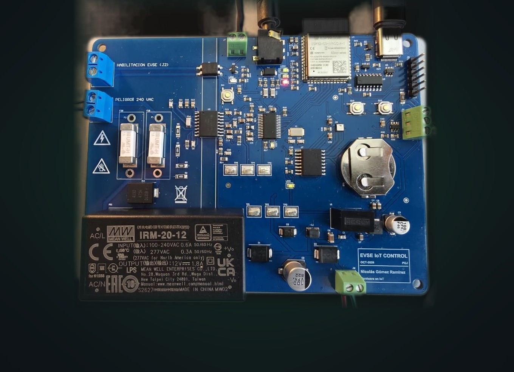
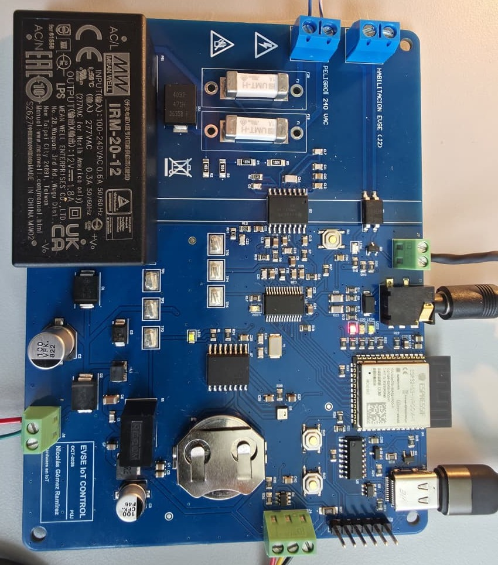
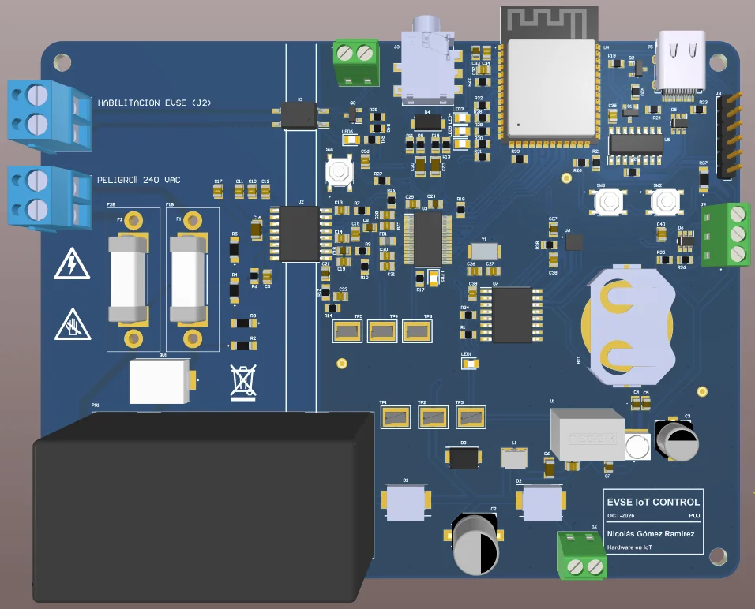
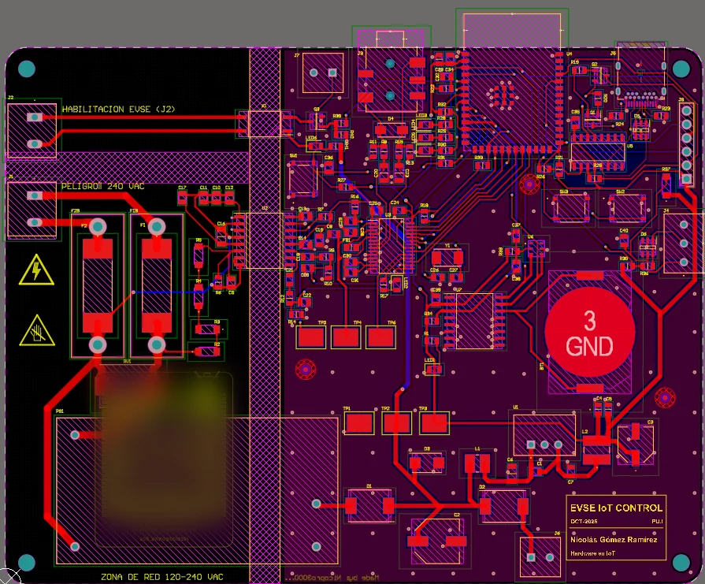
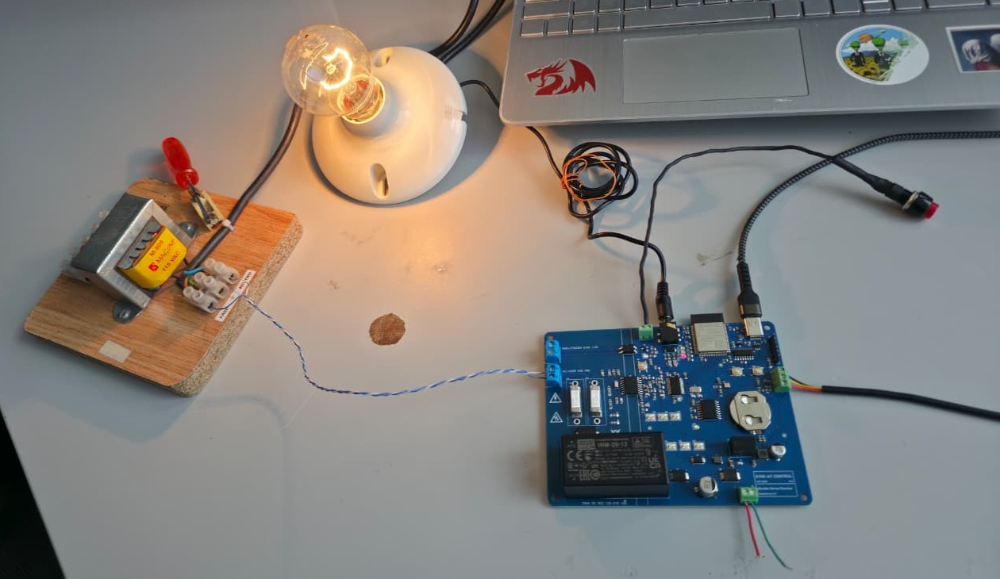
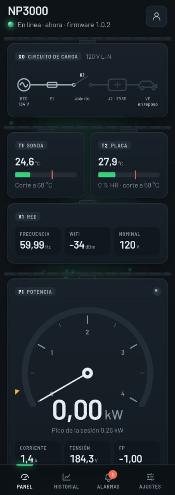
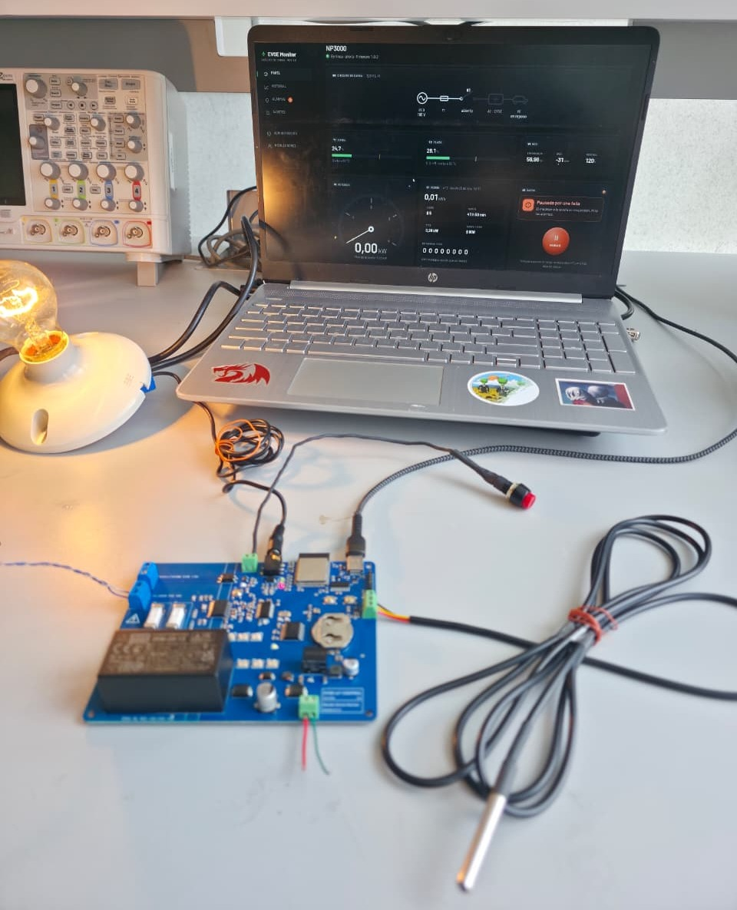

Medidor y control IoT para la carga de un carro eléctrico
Una placa electrónica diseñada desde cero que se instala junto al cargador, mide cada carga, la puede pausar o reanudar y muestra todo en vivo en una app, desde el celular o el computador.
Portada: la placa 1, ensamblada por JLCPCB, en el banco de pruebas (orientada como en Altium: la zona de red a la izquierda).
Cuando un carro eléctrico se carga en casa, el cargador de pared (el EVSE, por sus siglas en inglés) hace su trabajo, pero casi nunca cuenta nada: ni cuánta energía entregó, ni cuánto costó la carga, ni deja pausarla desde lejos. Este proyecto le agrega eso a cualquier cargador con un equipo propio: una placa electrónica diseñada desde cero, el programa de su microcontrolador y una app en internet.
La placa no está en el camino de la potencia: mide «al lado» y, para pausar, abre los bornes de habilitación del cargador, que es quien detiene la carga. Las protecciones (temperatura, botón de parada, fallas) las decide la placa, aunque no haya internet.

1 2 3 4 5 6 7 8 9 10Además: sonda de temperatura para el cable, sensor de temperatura y humedad, botón de parada de emergencia y LEDs de estado.


El circuito se dibujó en Altium Designer en seis hojas (alimentación, medición, microcontrolador, sensores, actuación y una principal que las une). Cada pieza se escogió comparando dos o tres opciones contra su hoja de datos y el stock del fabricante.
La regla que mandó en todo el diseño fue la seguridad: lo que toca la red queda de un lado y lo que se puede tocar (USB, sensores) del otro. Para revisarlo se escribieron 58 scripts en Python que leen los archivos de Altium y buscan conexiones sueltas o distancias que no cumplen.
JLCPCB fabricó y ensambló dos placas con 127 piezas cada una; solo el regulador de 3,3 V y dos pulsadores se soldaron a mano.
Elegir piezas que el fabricante tuviera en bodega también fue parte del diseño: cuando el relé previsto se agotó, se cambió por uno con la misma huella y el firmware invirtió su lógica. La placa funcionó sin cortar pistas ni soldar puentes.

Etapa 4 · con la red

Saber cuánto cuesta cada carga, ponerle límites (kWh, tiempo o pesos) y cargar solo en el horario de tarifa más barata.
Un monitor por cargador para cobrarle a cada residente la energía de su carro y pausar cargas para no pasarse de la potencia del edificio.
Con un contactor externo, la misma placa vigila y apaga a distancia un calentador, una bomba o un aire acondicionado.